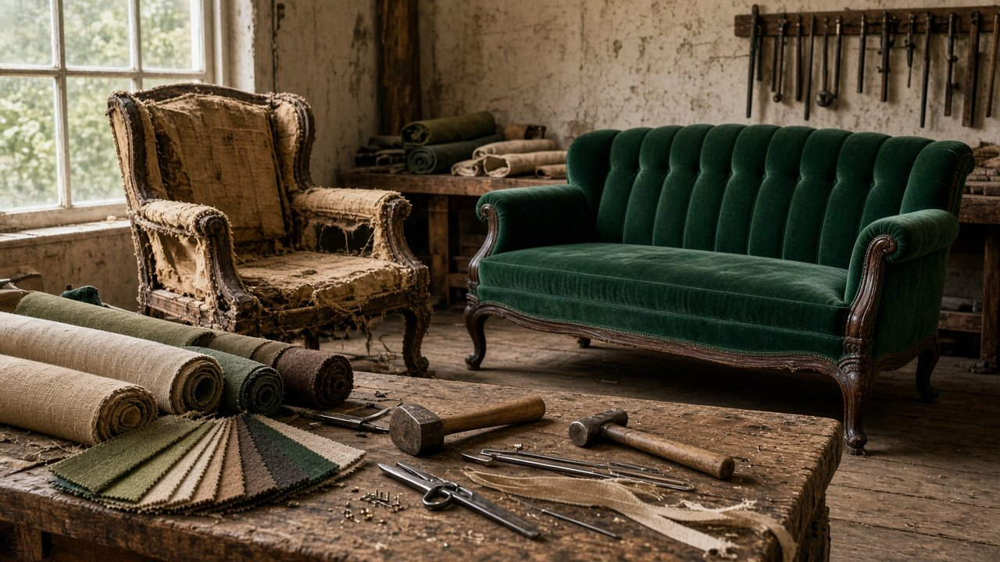

Furniture repair, reupholstery and heirloom restoration from a local, family-owned shop, plus custom furniture and commercial work.

Sample photo“created in 1991 we are a local family owned business who puts heart and soul into everything we do”— OUR STORY, NEXTDOOR
Please confirm the founding year: Nextdoor says 1991 (and “35 yrs” in an April 2026 reply), while an older Houzz profile says 1997.
From a single dining chair to a full sectional, and the heirloom you want to keep for another generation.
Furniture repair and reupholstery, from chairs and ottomans to sectionals and cushions.
Antique and heirloom restoration, giving a special piece new life.
Custom furniture projects, plus assembly for “some assembly required” pieces.
Seating and upholstery work for businesses, including:
Second Generation answers neighbors' upholstery requests on Nextdoor directly, by email and phone.
Please confirm whether customers can walk in, or should get in touch first.